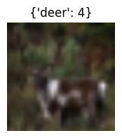

CONFIG_PATH = '../config.yml'
DATA_PATH = Path('../input')Prepare patches
Methods to prepare patches of input image
Load parameters from the config file.
config = yaml.safe_load(open(CONFIG_PATH))dset = datasets.CIFAR10(DATA_PATH, download=True, train=True)Files already downloaded and verifiedimages, targets = dset.data, dset.targets
len(images), len(targets)(50000, 50000)Prepare a small batch of images to test the image processing.
images.shape(50000, 32, 32, 3)Sample a bunch of points and select those as indices of the image for training.
image_idx = np.random.randint(low=0, high=len(images), size=3)# corresponding labels
targets = [targets[t] for t in image_idx]
targets[3, 2, 4]What are the classes we are dealing with?
# dict2obj lets you dotify dicts or nested dicts
clsidx = dict2obj(dset.class_to_idx)
clsidx.bird2# filter the dict based on a function that checks k and v
filter_dict(clsidx, lambda k,v: v in targets){'bird': 2, 'cat': 3, 'deer': 4}# filters based on just the values
filter_values(clsidx, lambda v: v in targets){'bird': 2, 'cat': 3, 'deer': 4}targets[0]3clsidx{ 'airplane': 0,
'automobile': 1,
'bird': 2,
'cat': 3,
'deer': 4,
'dog': 5,
'frog': 6,
'horse': 7,
'ship': 8,
'truck': 9}in_ch = config["patch"]["in_ch"]
out_ch = config["patch"]["out_ch"]# size of each small patch
patch_size = config['patch']['size']
patch_size16images.shape[1:](32, 32, 3)images = torch.Tensor(images[image_idx])
images = images/255.
images.shapetorch.Size([3, 32, 32, 3])Increase image size to match with ViT paper \(224\times 224\)
hw = config['data']['hw']
augs = T.Resize(hw)
augsResize(size=[224, 224], interpolation=bilinear, max_size=None, antialias=None)images = augs(images.permute(0, 3, 1, 2))
images.shapetorch.Size([3, 3, 224, 224])n_channels, height, width = images.shape[1:]
print(f"image height: {height}, width: {width}, channels: {n_channels}")
assert height==widthimage height: 224, width: 224, channels: 3Number of patches is also called the sequence length in the original Transformers paper.
n_patches = (height*width)/(patch_size**2)
print(f"number of {patch_size}x{patch_size} patches in an image of shape {images.shape[1:]}: {n_patches}")number of 16x16 patches in an image of shape torch.Size([3, 224, 224]): 196.0shape_sequence = (n_patches, (patch_size**2)*in_ch)
print(f"shape of flattened 2D sequence: {shape_sequence}")shape of flattened 2D sequence: (196.0, 768)Prepare flattened 2D sequence
Display a sample image with title.
idx=2plt.figure(figsize=(2, 2))
plt.imshow(images[idx].permute(1, 2, 0))
plt.axis('off')
label = filter_values(clsidx, lambda v: v is targets[idx])
plt.title(label=label)Text(0.5, 1.0, "{'deer': 4}")
Use a convolutional layer to prepare a patched image.
conv2d = nn.Conv2d(in_channels=in_ch, out_channels=out_ch, kernel_size=patch_size, stride=patch_size)PyTorch requires images in BCHW format.
images.shapetorch.Size([3, 3, 224, 224])patched_image = conv2d(images)
patched_image.shapetorch.Size([3, 768, 14, 14])patched_image = patched_image.flatten(start_dim=2, end_dim=-1)
patched_image.shape # flatten to 2D
# permute to match the expected shape
patched_image = patched_image.permute(0, 2, 1)
patched_image.shapetorch.Size([3, 196, 768])Prepare class embedding
The goal is to prepend to the flattened sequence a new item that encodes the class. Inorder to create class embedding, we need to know the embedding dimension as well since each of the embeddings is associated to the class as well.
bs, seq_len, embed_dim = patched_image.shape
print(f"shape of embed dim (D): {embed_dim}")
print(f"shape of sequence length (N): {seq_len}")shape of embed dim (D): 768
shape of sequence length (N): 196# for all patches in the image prepend a learnable class token
# this is a common token, not separated by items in batch
class_token = nn.Parameter(torch.ones(1, 1, embed_dim), requires_grad=True)
class_token.shapetorch.Size([1, 1, 768])class_token.shape, patched_image.shape(torch.Size([1, 1, 768]), torch.Size([3, 196, 768]))# class tokens are shared among batch items
class_tokens = repeat(class_token, '1 1 d -> bs 1 d', bs = bs)
class_tokens.shapetorch.Size([3, 1, 768])torch.concat([class_tokens, patched_image], dim=1)tensor([[[ 1.0000e+00, 1.0000e+00, 1.0000e+00, ..., 1.0000e+00,
1.0000e+00, 1.0000e+00],
[-1.9330e-01, 5.3230e-01, 4.1072e-01, ..., -7.1345e-02,
-3.6855e-02, -5.7116e-03],
[-2.3731e-01, 6.1622e-01, 4.8126e-01, ..., -3.7821e-02,
-2.9133e-02, -4.7400e-02],
...,
[-8.0137e-02, 1.7678e-01, 1.2428e-01, ..., -3.5896e-02,
-3.9498e-02, 9.8821e-03],
[-5.6294e-02, 1.7154e-01, 9.5655e-02, ..., -4.0395e-02,
-2.8825e-02, -8.3997e-04],
[-5.4865e-02, 1.5447e-01, 8.8190e-02, ..., -2.9878e-02,
-3.1163e-02, -7.8464e-04]],
[[ 1.0000e+00, 1.0000e+00, 1.0000e+00, ..., 1.0000e+00,
1.0000e+00, 1.0000e+00],
[-2.1967e-02, 1.6781e-01, 1.1162e-01, ..., -1.2469e-01,
-8.1662e-02, 1.2122e-01],
[-1.9772e-02, 1.7202e-01, 1.1616e-01, ..., -1.3429e-01,
-8.4445e-02, 1.2937e-01],
...,
[-2.6714e-01, 4.9820e-01, 4.5177e-01, ..., 8.2063e-02,
5.1341e-02, -2.3969e-01],
[-9.8749e-02, 1.2397e-01, 9.3057e-02, ..., 3.5830e-02,
-2.1807e-03, -5.0337e-02],
[-9.7703e-02, 2.9660e-01, 1.7762e-01, ..., 4.5148e-02,
-2.6980e-03, -9.4421e-02]],
[[ 1.0000e+00, 1.0000e+00, 1.0000e+00, ..., 1.0000e+00,
1.0000e+00, 1.0000e+00],
[-1.3643e-02, 7.4828e-02, 1.8845e-02, ..., 3.0374e-03,
-2.4055e-02, -1.7881e-02],
[-6.4193e-02, 1.5682e-01, 1.2541e-01, ..., -4.4255e-03,
-1.8938e-02, -4.9337e-02],
...,
[-4.5829e-02, 1.6316e-01, 1.0169e-01, ..., -7.5816e-03,
-1.7019e-02, -3.2718e-02],
[-9.3686e-02, 2.6215e-01, 1.8407e-01, ..., 1.8344e-02,
-8.4813e-03, -5.2504e-02],
[-9.8182e-02, 2.9226e-01, 1.7385e-01, ..., 2.4724e-02,
1.0079e-02, -8.5595e-02]]], grad_fn=<CatBackward0>)patched_image = torch.concat([class_tokens, patched_image], dim=1)
patched_image.shapetorch.Size([3, 197, 768])Prepare positional embedding
This should now be same for all images in the batch. Add positional embedding for each patch.
# +1 for the extra class token added above
pos_token = nn.Parameter(torch.ones(1, int(seq_len)+1, embed_dim), requires_grad=True)
pos_token.shapetorch.Size([1, 197, 768])Add the positional embedding to create the input \(z_l^0\)
patched_image += pos_tokenPatchEmbedding Module
PyTorch module that does all of the above.
PatchEmbedding
PatchEmbedding (config, channel_first=True)
Base class for all neural network modules.
Your models should also subclass this class.
Modules can also contain other Modules, allowing to nest them in a tree structure. You can assign the submodules as regular attributes::
import torch.nn as nn
import torch.nn.functional as F
class Model(nn.Module):
def __init__(self):
super().__init__()
self.conv1 = nn.Conv2d(1, 20, 5)
self.conv2 = nn.Conv2d(20, 20, 5)
def forward(self, x):
x = F.relu(self.conv1(x))
return F.relu(self.conv2(x))Submodules assigned in this way will be registered, and will have their parameters converted too when you call :meth:to, etc.
.. note:: As per the example above, an __init__() call to the parent class must be made before assignment on the child.
:ivar training: Boolean represents whether this module is in training or evaluation mode. :vartype training: bool
PatchEmbedding(config, channel_first=True)(images).shapetorch.Size([3, 197, 768])